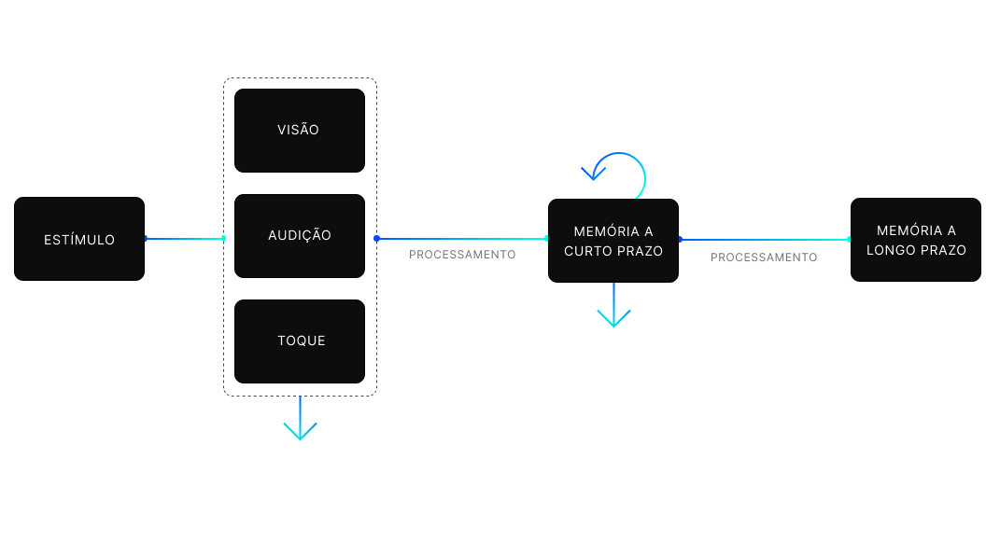

Como a memória funciona - para UX Designers
A memória humana é um dos mecanismos que determina a interação que uma pessoa tem com o mundo. Conhecendo como funciona a memória, designers conseguem criar interfaces mais centradas no ser humano e que correspondam as habilidades naturais do usuário, diminuindo esforço e aumentando a usabilidade.
O Básico
A memória é o armazenamento natural dos dados do cérebro humano. Ela reage a estímulos externos, coleta dados, processa eles e organiza de diferentes maneiras. Ela permite o acesso aos dados coletados quando necessário, mas não é o mecanismo perfeito, pois é influenciada por fatores de natureza física e emocional.
Basicamente a memória é separada em 3 tipos:
Memória sensorial
Guarda os dados por um momento breve quando os percebemos com nossos sentidos físicos, como audição, visão ou tato;
Memória a curto prazo
Permite a pessoa a guardar informação lembrada por um curto prazo sem repetições;
Memória a longo prazo
Retém grande quantidade de informação que podem ser guardadas por um longo período, sendo possível até o período todo de vida. Um método efetivo de guardar informação por longos prazos são as repetições e associações.

UX Design
Designers podem levar esses pontos em consideração ao projetar fluxos para aplicações. A memória a longo prazo pode ser usada pra manter os dados principais da aplicação, o que permite o melhor uso da interface repetidas vezes. Isso ajuda muito a criar estratégias melhores, organizar melhor os dados e fortalecer a arquitetura de informação da aplicação.
Leis de memória
Concentração
Pra lembrar sobre alguma coisa ou bastante informação, precisa de concentração. Caso contrário, tem grandes chances de cair em memória de curto prazo e se perder.
Associação
A memória cria uma rede conectando vários tipos diferentes de informações. Criando as associações, fica muito mais fácil de lembrar de algo e guardar em memória de longo prazo.
Repetição
Um jeito efetivo de guardar em memória de trabalho até cair na memória de longo prazo.
Existem outras leis em ux que podem ser usadas também, como a Lei de Miller e de Hick.
Lei de Miller
O número de items que uma pessoa pode guardar na memória de trabalho (mais ou menos 7).
Interfaces que tenham muitas opções pra lembrar de uma vez podem criar tensões e deixar usuários irritados, mesmo eles não sabendo descrever a razão dessas emoções.
Mais sobre a Lei de Miller.
Lei de Hick
Quanto mais opções existir de uma vez, mas dificil escolher.
Com muitas opções o usuário pode ficar perdido nas associações que podem ser feitas, e fica impossível prever se podem ser boas ou ruins e também pode sobrecarregar a memória de trabalho, caindo na Lei de Miller.
Mais sobre a Lei de Hick
Dicas
- Não deixe os usuários memorizar muita informação ao mesmo tempo;
- Não exagere nas opcões de escolha;
- Economize esforço de memória com padrões e símbolos reconhecíveis.
- Use navegação consistente.
- Não esconda os elementos principais de navegação;
- Estimule diferentes tipos de memória (visual, audio, verbal, mecânica, etc);
- Tenha cuidado com as emoções do usuário.
Mais artigos sobre pra se aprofundar: